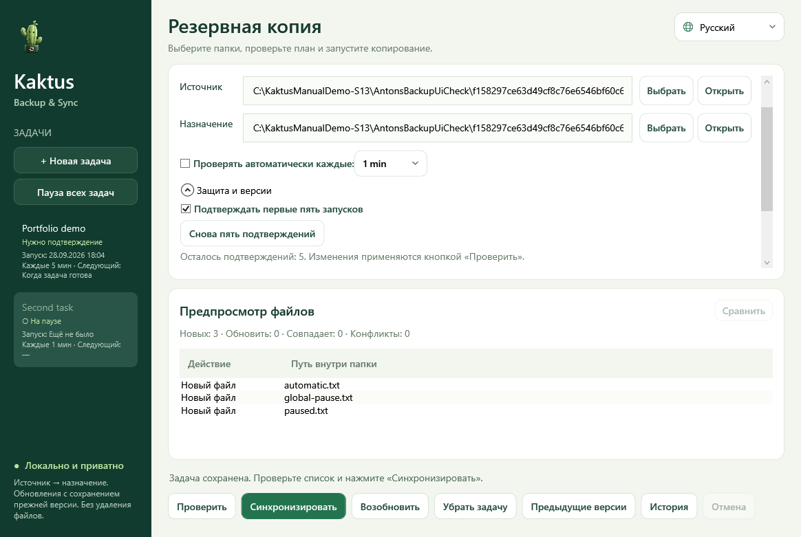

Windows · x64
Kaktus Backup & Sync
Выполняет одностороннее резервное копирование папок с предварительным просмотром и сохранением предыдущих версий.
Предварительная версия · 5.2.0-preview.7Перед запускомPortable-пакет содержит .NET. Установка Python и SDK не нужна. Это предварительный выпуск.


Как это работает
- Выбрать источник
- Проверить предпросмотр
- Создать одностороннюю копию
Первые шаги
Распакуйте ZIP целиком и откройте KaktusBackupSync.exe. Выберите источник и цель, проверьте план перед синхронизацией.